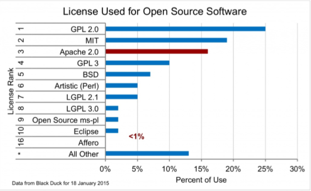

Open Source & Free Software
흔히 오픈 소스에는 저작권이 없을 것이라고 오해하는 경우가 있는데 독점적인 권리가 없을 뿐이지, 저작권은 존재합니다. 예로써, 오픈 소스 프로그램은 보통 일정한 라이선스로 배포합니다. 이 중 가장 강제성이 강한 것이 GPL인데, GPL은 오픈 소스인 만큼 소스 코드를 자유롭게 수정하고 배포할 수 있는 권리를 보장하지만, 재귀적 전염성 조항이라는 특이적인 성질이 부여됩니다. 이는 GPL 소스로부터 파생된 프로그램도 소스가 공개되어야 하고, 파생된 프로그램 또한 강제로 GPL 라이선스로 배포되어야 한다는 뜻입니다.
그래서 개념 없는 개발자가 생각 없이 GPL 라이선스를 따르는 오픈 소스 코드를 집어넣어서 프로그램을 만들면 그 프로그램 전체의 코드가 강제 공개 당합니다. 투하트 2, 스카이프 등이 소스 코드를 강제 공개 형벌을 받은 바 있고 이코는 영구 판매중지되었습니다. 뒷날에 플레이스테이션 3 용 게임으로 재발매 되었는데, 재발매 본에서는 GPL 소스를 전부 들어냈습니다. 소니 에서는 GPL 위반사항 때문에 DVD 4천만 장을 리콜 한 적이 있습니다. 컴파일된 프로그램인데 GPL 위반을 어떻게 아는가는 GPL 코드를 사용했는지 안 했는지 자유 소프트웨어 재단에서 이일을 하기 때문입니다.
오픈소스 라이선스란?
오픈소스 소프트웨어 라이선스란 오픈소스 소프트웨어 개발자와 이용자간에 이용방법 및 조건의 범위를 명시한 계약입니다. 따라서, 오픈소스 소프트웨어를 이용하기 위해서는 개발자가 규정한 라이선스를 지켜야하며, 이를 위반할경우에는 라이선스위반 및 저작권침해가 발생하고, 이에대한 책임을 지게됩니다.이런 오픈소스 소프트웨어 라이선스는 기본적으로 이용자의 자유로운 사용을 보장하고있습니다. 오픈소스 소프트웨어가 이와같은 라이선스를 만들어서 운영하는이유는 오픈소스 소프트웨어를 이용하여 개발한 소프트웨어에 대해서도 법의 테두리안에서 소스코드를 공개하도록 하기 위한 것입니다. 2017년 05월 현재 오픈소스 소프트웨어 라이선스의 인증을 관장하고있는 OSI에따르면 78개가 있습니다. 하지만 실제로 많이 사용되는 라이선스의개수는 한정되어 있습니다. 오픈소스 프로젝트 개발 포털사이트인 Freshmeat에 등록된 프로젝트 약 43,722개 중 약 72%가 GPL과 LGPL라이선스 입니다.
